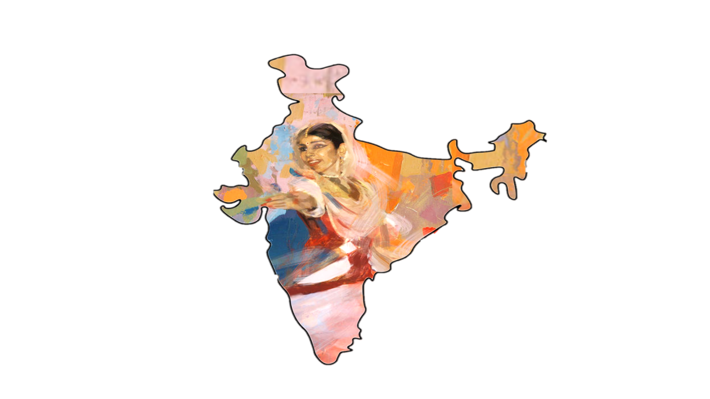
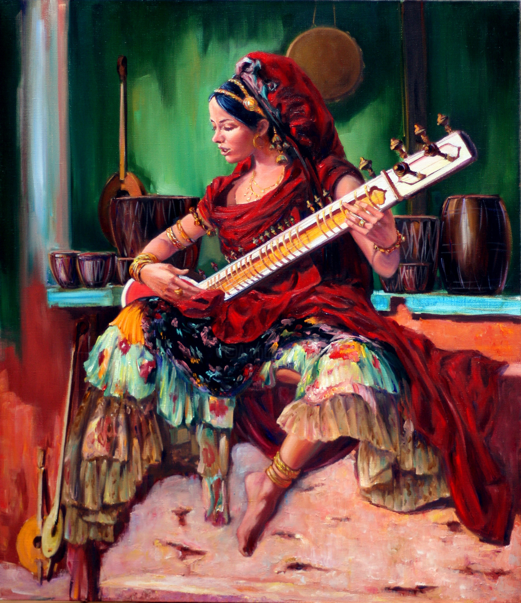
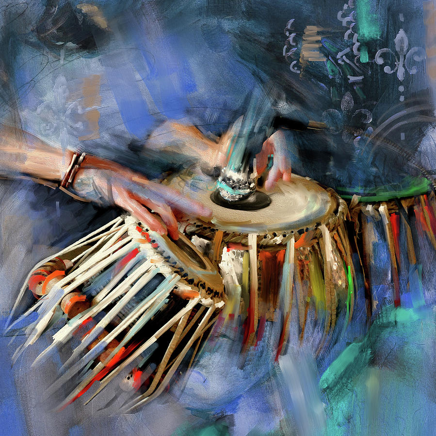
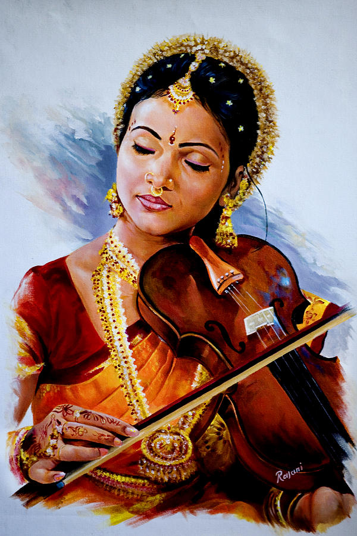

"Saregama" is a term used in Indian music, representing the first few notes of the Indian musical scale, similar to "Do-Re-Mi" in Western music. In Indian music, these notes are "Sa-Re-Ga-Ma-Pa-Dha-Ni". "Saregama" forms the melodic foundation of a musical composition in Indian classical and film music. It is essential for understanding and creating melodies in the Indian music tradition."

The sitar is one of the most iconic stringed instruments in Indian classical music. It is commonly associated with the melody and is often used to play intricate and elaborate "ragas" (melodic scales). Sitar players skillfully produce the "Saregama" notes and explore various melodic patterns through the frets and strings.
The bamboo flute is an instrument that is widely used in Indian classical music. Flute players produce the "Saregama" notes by controlling the breath and finger positions, allowing for beautiful and emotive melodies

The tabla is a pair of hand drums that forms the backbone of rhythm in Indian music. It consists of two drums, the smaller one is called "dayan" (right hand) and the larger one "bayan" (left hand). Tabla players use various strokes and techniques to create intricate rhythmic patterns that complement the melodic aspect of the music represented by "Saregama."
The harmonium is a keyboard instrument that plays an essential role in Indian classical and devotional music. It provides support to the vocalist or instrumentalist by playing the "Saregama" notes and maintaining the pitch and harmony of the composition.

Though originally not an Indian instrument, the violin has been integrated into Indian classical music and plays a crucial role as an accompanying instrument. It adds depth and richness to the melodic aspects of the music, including the "Saregama" notes.
The sarod is a beautiful musical instrument known for its soulful and captivating sound. It is a stringed instrument that belongs to the lute family and is widely used in the classical music of North India, particularly in the Hindustani classical tradition. The sarod is also occasionally used in certain forms of traditional and folk music.
Adjust sound for the selected instrument.
Select an instrument, hit Record, play notes, then Replay.
Pick a raga, select your instrument above, then press Play. Bubbles fall and play each note on landing.